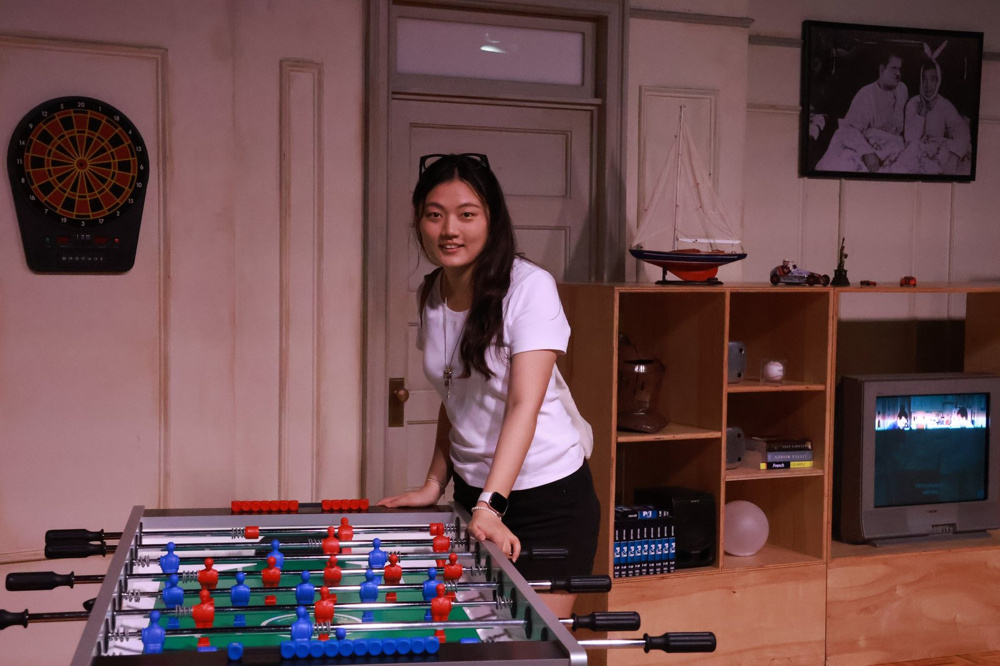
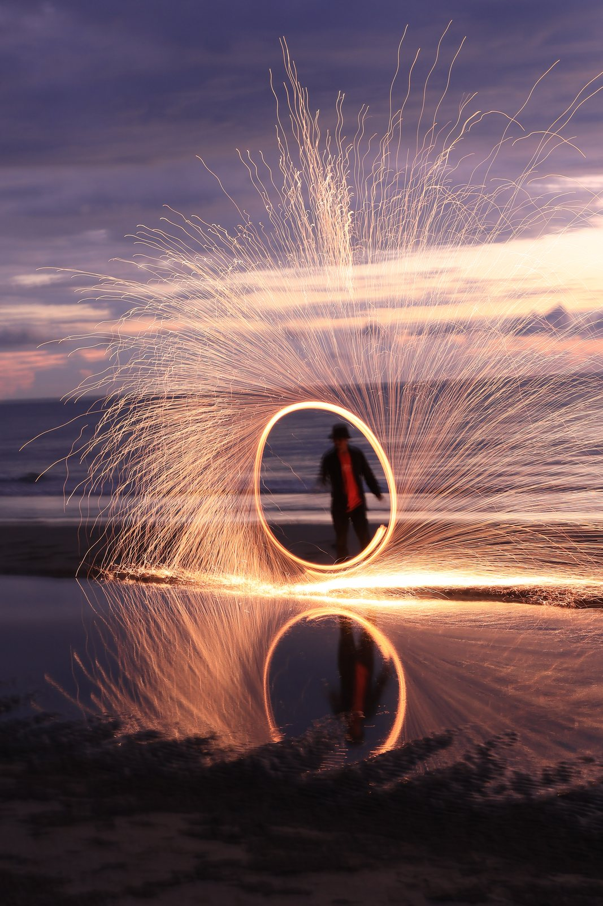
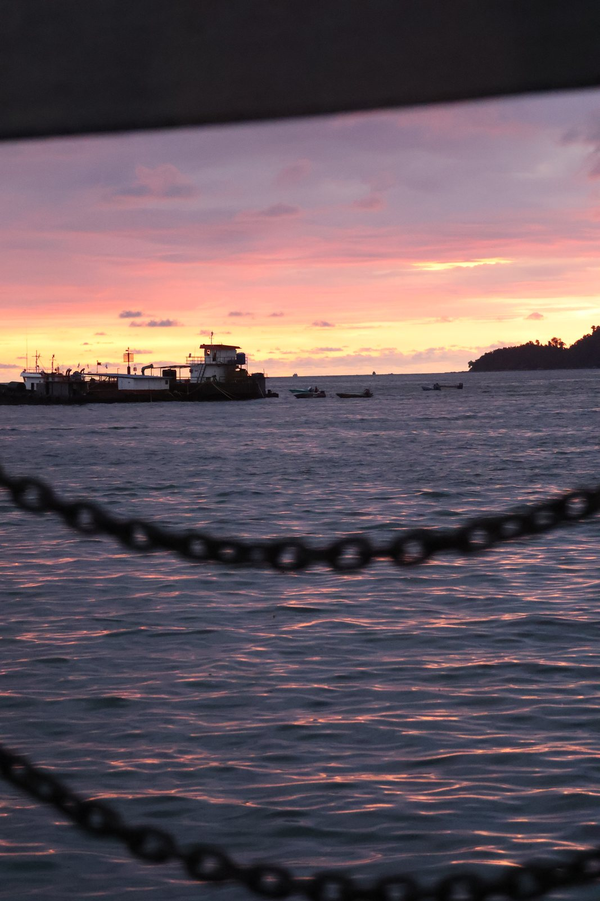
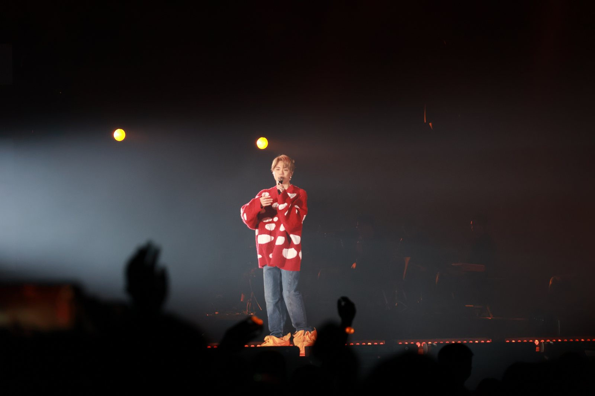
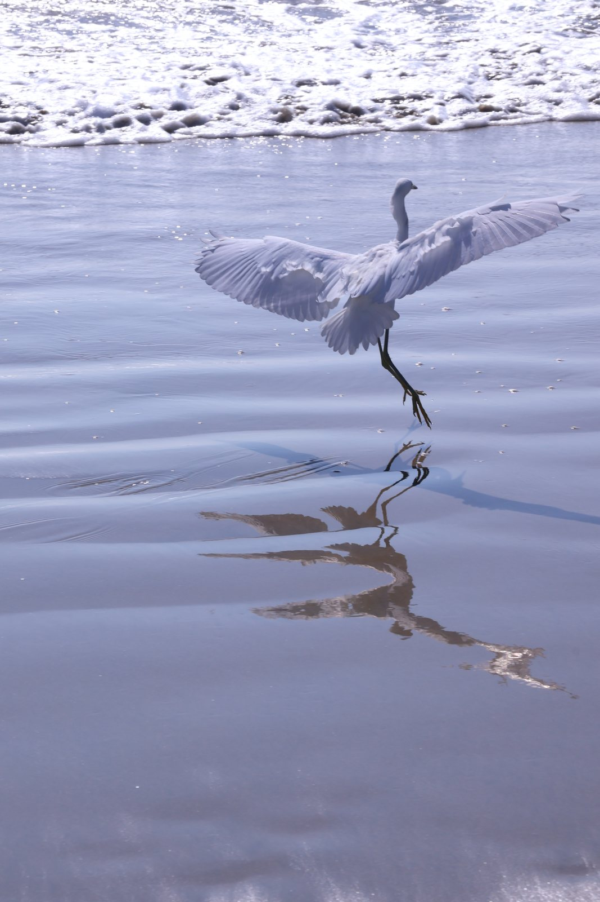

Beyond Research
Life &
Moments
Outside research, I enjoy badminton, photography, and making handicrafts. I am also learning Cantonese and Korean on Duolingo, one lesson at a time.
A Small Visual Diary
Moments in Motion




